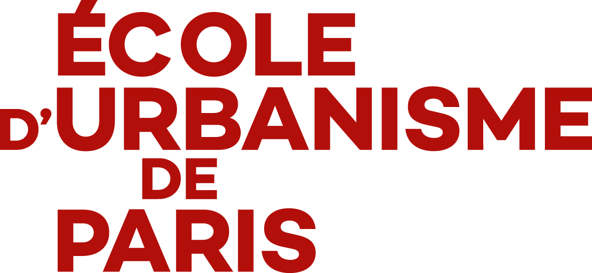
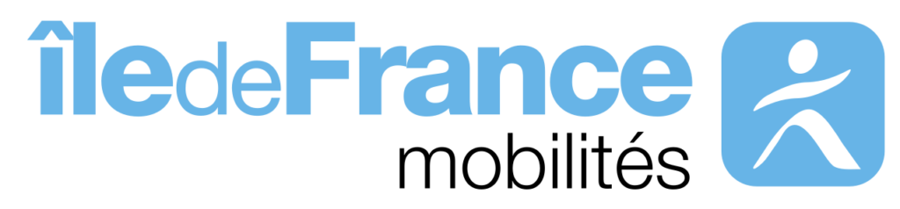
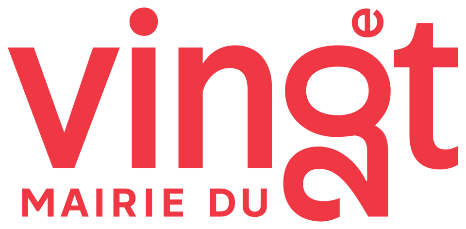
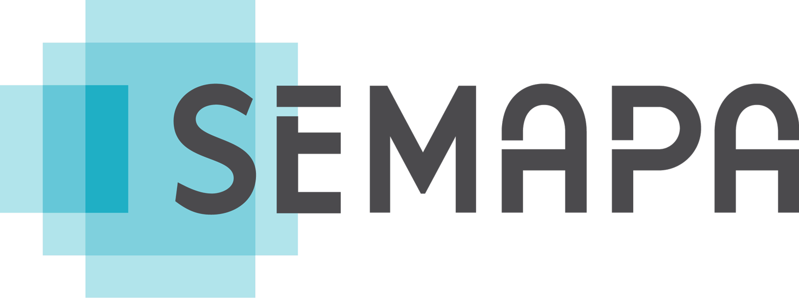
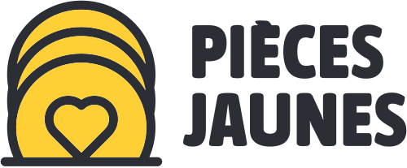
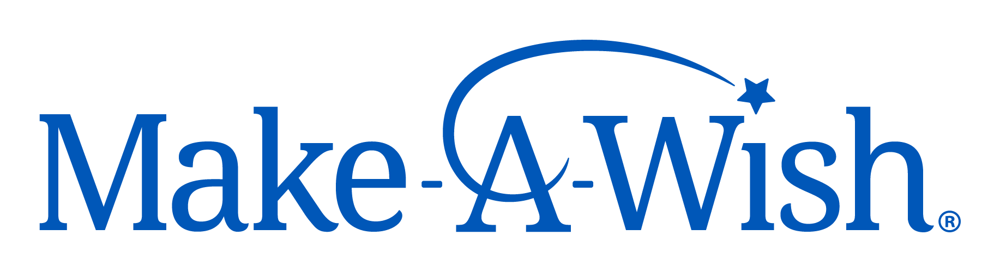
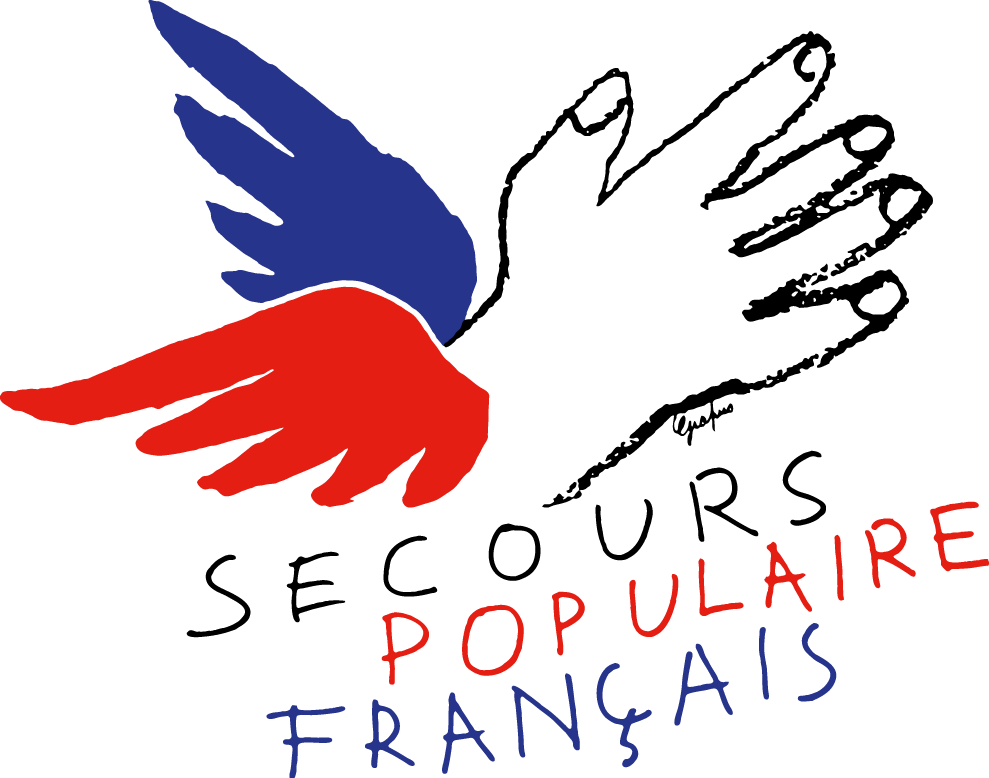
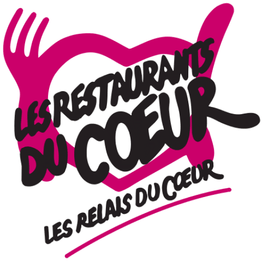

Evan LISON
Étudiant urbaniste
Paris, France
Étudiant en Master 2 Territoire, Réseaux, Aménagement, Mobilités, Environnement (TRAME), mention Transports, Mobilités, Réseaux, une formation commune de l’École d’Urbanisme de Paris et de l’École nationale des ponts et chaussées, à l'interface des sciences humaines et sociales et des sciences de l'ingénieur pour former à l’analyse, à la conception et au pilotage de réseaux. Cette formation m’apporte des compétences en planification et en exploitation des systèmes de transport en tenant compte de leur résilience, ainsi qu’en construction de stratégies partagées entre acteurs publics/privés pour exercer des métiers au sein de la maîtrise d’ouvrage urbaine et de la conduite de projets territoriaux au sein de collectivités, d’aménageurs ou d’opérateurs de transport.
Mon parcours en géographie et urbanisme m’a doté d'une approche rigoureuse du diagnostic territorial, des réglementations d’urbanisme et du montage de projet, ainsi qu’une bonne maîtrise de l’analyse statistique et cartographique grâce à des outils comme QGIS.
En parallèle de mes études, j’occupe depuis trois ans un emploi étudiant à Disneyland Paris, où j’ai acquis une réelle capacité d’adaptation et de travail en équipe, ainsi qu’une pratique courante de l’anglais au quotidien.
Je suis à la recherche d'un stage de fin d'études de 4 à 6 mois, disponible entre le 15 mars et le 30 septembre 2027.
Compétences
Outils
QGIS, PTV Visum, Magrit, Canva, suite Office
Langues
Français, Anglais, Espagnol
Formations
École d'Urbanisme de Paris
2026-aujourd'hui, Champs-sur-Marne.
M2 Territoire, Réseaux, Aménagement, Mobilités, Environnement (TRAME), mention Transports, Mobilités, Réseaux
Répond aux enjeux de la mobilité et de la gestion des réseaux urbains, en croisant sciences humaines et ingénierie autour du diagnostic territorial et de la conduite de projet, pour préparer à des fonctions de maîtrise d'ouvrage et de pilotage de projets territoriaux.
Université Paris-Nanterre
2025–2026, Nanterre.
M1 Urbanisme et aménagement, parcours Projet Urbain et Montage d'Opérations (PUMO)
S'inscrit dans les enjeux de la fabrique urbaine et de la transition écologique des villes, avec des enseignements sur le droit de l'urbanisme, l'économie de l'aménagement et le projet urbain, pour préparer aux métiers d'aménageur et d'urbaniste en collectivité.
Université Paris-Cité
2022–2025, Paris 13e.
Licence Géographie et aménagement, parcours Environnement et Développement (GAED)
Traite des enjeux liés à la manière dont les sociétés aménagent leur territoire, en croisant géographie physique et humaine avec des outils comme la cartographie et les SIG, pour préparer à des métiers de l'urbanisme, de l'aménagement ou de la gestion des risques.
Projets
Stratégie des bornes de recharge électriques IRVE en Île-de-France
sep. 2026-aujourd'hui


Le développement d'un réseau de bornes de recharge d'accès public en Île-de-France : quelle trajectoire ?
Île-de-France Mobilités vise 100 000 points de charge ouverts au public en 2030 pour accompagner la transition vers le véhicule électrique, un levier majeur de la baisse des émissions du secteur des transports. L'objectif de cet atelier est d'évaluer si la trajectoire actuelle de déploiement permet d'atteindre l'objectif, et d'en apprécier la qualité du point de vue de l'offre de service rendue aux automobilistes (notamment en matière de couverture territoriale, de disponibilité, de lisibilité tarifaire et d'interopérabilité). Nous réalisons un état des lieux de l'offre existante et des entretiens avec les acteurs du déploiement, à savoir les syndicats d'énergie, les collectivités territoriales et les opérateurs privés.
Réaménagement du secteur des Vallées à La Garenne-Colombes
avr. 2026


Le fil vert de la jeunesse : reconnecter les espaces publics d'un quartier minéralisé pour en faire un cœur de vie apaisé et végétalisé.
Lors d'une semaine intensive de projet organisée avec le CAUE 92, nous avons repensé le secteur des Vallées, à La Garenne-Colombes et Bois-Colombes, que notre diagnostic décrit comme un quartier très minéralisé et assez dépendant de la voiture. Notre projet « Le fil vert de la jeunesse » associe désimperméabilisation, végétalisation et apaisement des circulations pour relier les principaux lieux de vie du quartier. Nous avons réalisé de nombreuses illustrations, plans, coupes de rue, perspectives ou encore schémas de principe, qui donnent à voir une « rue aux écoles » sécurisée, un marché requalifié en lieu de vie intergénérationnel et une trame verte continue.
Diagnostic territorial autour du pôle multimodal de la gare de Poissy
jan.–avr. 2026
Un territoire fragmenté face aux inégalités d'accessibilité vécues au quotidien dans la gare comme espace d'intermodalité.
Ce diagnostic territorial porte sur les communes de Poissy, Carrières-sous-Poissy et Villennes-sur-Seine, organisées autour de la gare de Poissy, pôle multimodal majeur des Yvelines desservi par le RER A, la ligne J et un réseau de bus dense, qui accueillera prochainement le RER E (Eole) et le tramway T13.
Une première phase quantitative, à partir de données INSEE et de cartographies réalisées, interroge la manière dont la morphologie urbaine, la structure sociale des communes et l'offre de transport produisent des inégalités d'accessibilité entre les habitants. Une seconde phase qualitative, resserre l'analyse sur le parvis de la gare à travers observation de terrain, des entretiens et des captations visuelles/sonores, pour comprendre comment l'organisation et les aménagements de cet espace structurent les pratiques et les expériences vécues de l'intermodalité par ses usagers.
Le Marais : pratiques et perceptions de l'espace public
jan.–avr. 2026
Comprendre l'écart entre espace vécu et espace perçu, en confrontant les pratiques quotidiennes des différents usagers à l'image qu'ils se font du quartier.
Cette enquête ethnographique interroge le Marais comme un espace public vécu différemment selon ses usagers. L'objectif est de comprendre les pratiques, perceptions et ambiances du quotidien à travers une analyse sensible allant au-delà de la carte. La méthode combine parcours commentés, parcours sensibles via des croquis réalisés par les personnes interrogées elles-mêmes, afin de saisir la parole en mouvement et les ressentis propres à chaque profil d'usager.
Enquête de terrain sur les stratégies d'attractivité touristique au Havre
sep.–déc. 2025
Évaluation des stratégies d'attractivité touristique d'une ville industrialo-portuaire en transformation.
Voyage d'étude d'une semaine au Havre, consacré aux dynamiques touristiques d'une ville longtemps jugée peu attractive. Il s'agit de déterminer si Le Havre s'impose désormais comme une véritable destination ou si elle demeure avant tout une ville de passage, entre croisiéristes, tourisme d'affaires et excursionnistes. La méthode, explicitement fondée sur la restitution en blog, combine observations de terrain et entretiens menés auprès de touristes, d'habitants, de commerçants et d'acteurs institutionnels.
Dynamiques de régénération post-incendie dans le parc national de Kosciuszko (2019–2022)
jan.–avr. 2025
Comment les types de sol et les conditions environnementales locales influencent-ils la dynamique de revégétalisation après les feux du Black Summer ?
Ce projet de géomatique analyse la régénération de la végétation sur un secteur de 380 km² du parc national de Kosciuszko (Nouvelle-Galles du Sud, Australie), fortement touché par les feux de forêt du Black Summer 2019-2020. L'objectif est d'évaluer l'intensité des incendies selon le type de couverture végétale et la proximité des ressources en eau, deux facteurs aussi susceptibles de favoriser la vitesse de reprise végétale. Notre démarche mobilise des images satellites Sentinel-2 et le calcul d'indices spectraux (NDVI, NBR), croisés avec le type d'occupation du sol et la topographie, sous QGIS et R.
Réaménagement du quartier Python-Duvernois (Paris 20e)
sep.–déc. 2024


Comment désenclaver un quartier perçu en marge depuis les années 1950 ? Entre repli urbain et opportunités de renouvellement.
La SEMAPA et la mairie du 20e arrondissement de Paris nous ont commandé des études préliminaires portant sur des intentions de projet pour l'avenir du quartier Python-Duvernois. Situé à l'extrémité est du 20e arrondissement de Paris, en bordure du périphérique et de la frontière avec Bagnolet, ce quartier souffre d'un enclavement persistant depuis les années 1950. Tout d’abord, nous avons réalisé un diagnostic territorial du quartier portant sur son bâti, ses circulations et ses usages. Puis nous avons élaboré un projet urbain visant à répondre aux dysfonctionnements identifiés et à recréer une continuité avec le reste de l’arrondissement.
Analyse de l'accessibilité des espaces verts à Nantes
sep.–déc. 2024
Existe-t-il des disparités d'accès aux espaces verts entre les quartiers de Nantes, via les transports en commun et les pistes cyclables ?
Ce micro-projet SIG analyse la répartition et l'accessibilité des espaces verts à Nantes, à partir des données ouvertes de Nantes Métropole. L'objectif est d'identifier d'éventuelles disparités d'accès aux espaces végétalisés entre quartiers, selon la desserte en transports en commun et en pistes cyclables.
Enquête sur la typologie des mobilités dans le 12e arrondissement de Paris
jan.–avr. 2024
Bercy, porte d'entrée des voyageurs : quelles motivations déterminent le choix entre train, bus et métro ?
Cette enquête est née de l'observation d'un flux constant de voyageurs et de valises à Bercy, quartier où se croisent la gare SNCF Paris-Bercy, la gare routière et la ligne 14 du métro. La question centrale porte sur les motivations qui sous-tendent le choix de mobilité des usagers entre ces différents modes. La méthode combine observations de terrain, entretiens semi-directifs courts et un questionnaire par QR code pour les usagers du métro, complétés par des relevés photographiques respectueux de l'anonymat des personnes.
Expériences
Disneyland Paris
mai 2023-aujourd'hui, Chessy.
Opérateur-Animateur d'Attractions (OAA)
Accueil, exploitation de l'attraction, sécurité et gestion des flux de visiteurs.
Vendeur en boutiques et
Coordinateur caisses
Vente, conseil client et gestion de la caisse. Gestion du coffre et apport en numéraire.
Vendeur en kiosques de restauration
Prise de commande et service en kiosques.
Carrefour Arcades
déc. 2022-jan. 2023, Noisy-le-Grand.
Vente en boulangerie-pâtisserie
Préparation, emballage et mise en rayon.
Bénévolat
Disney VoluntEARS
oct 2023-aujourd'hui, Chessy.
Programme de bénévolat des cast members de Disneyland Paris, engagés pour des causes de tous horizons.




Contact
Étudiant en Master 2 Territoire, Réseaux, Aménagement, Mobilités, Environnement (TRAME), mention Transports, Mobilités, Réseaux, une formation commune de l’École d’Urbanisme de Paris et de l’École nationale des ponts et chaussées.
Je suis à la recherche d'un stage de fin d'études de 4 à 6 mois, disponible entre le 15 mars et le 30 septembre 2027.